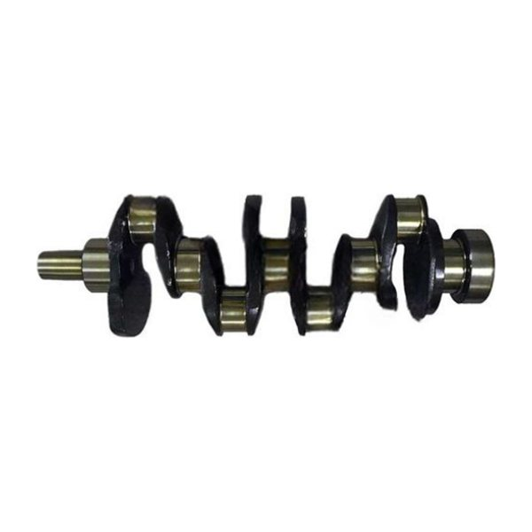

Available
Email for a quote
Yanmar 54191-401 Crankshaft
| OEM part number | 54191-401 |
| Fits | Yanmar |
| Models / notes | ATNE106 |
| Category | Engine |
| Type | Aftermarket replacement |
Send us the quantity you need and we'll reply with pricing, usually within 24 hours. Not the exact part? We can source it. Send the part number or a photo.